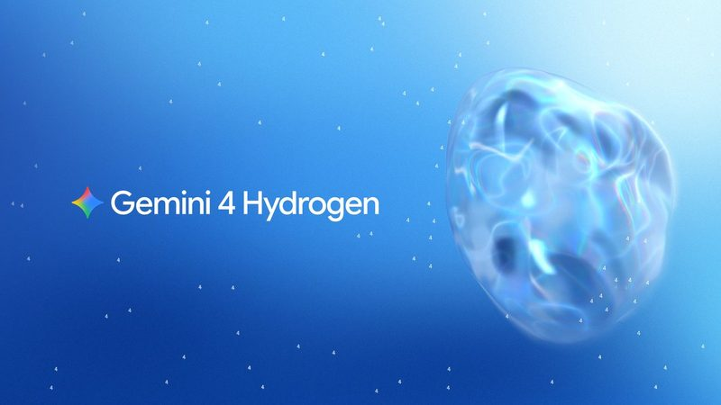
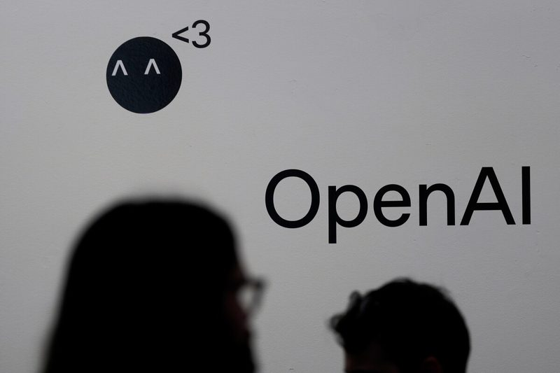
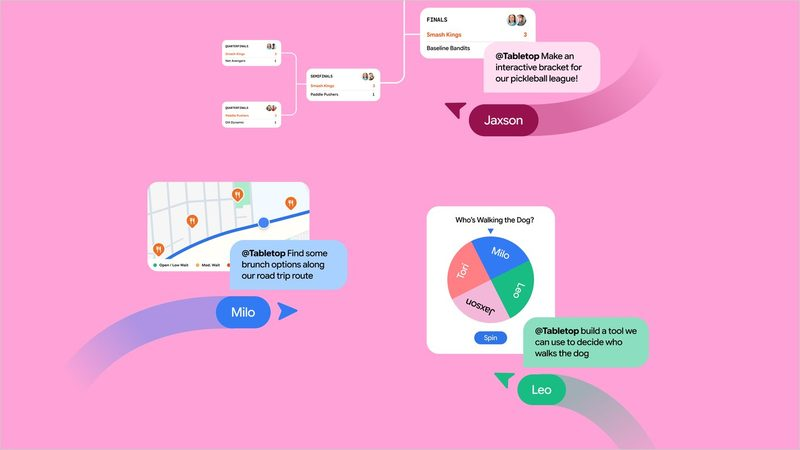

今日頭條
黃仁勳辭去 Nvidia 執行長 PLUS：Google 推出 Gemini 4 Hydrogen
本期重點：Nvidia 宣布黃仁勳辭職，由財務長 Colette Kress 暫代執行長；Google 推出 Gemini 4 Hydrogen，免費用戶與 Google 搜尋都用得到。另有公益團體提告要求凍結五家 AI 公司開發新模型、United 航空禁止 AI 代理幫人訂票、AI 聊天機器人推薦假購物網站的研究、Google 智慧眼鏡開放預購、Meta Muse 代打電話，以及 Google Labs 的揪團規劃工具 Tabletop。
📋 2026/11/13（五） 共 8 則 黃仁勳辭去 Nvidia 執行長，財務長 Colette Kress 暫代 Google 推出 Gemini 4 Hydrogen，免費用戶與搜尋都用得到 公益團體提告，要求法院凍結五家 AI 公司開發新模型 United 航空禁止 AI 代理幫人訂機票、報到 研究：AI 聊天機器人會推薦假購物網站 Google 智慧眼鏡開放預購，395 美元起 Meta Muse 開放付費用戶請 AI 代打電話給商家 Google Labs 推出 Tabletop，揪團規劃一頁搞定 圖：The Verge 新聞 #1 黃仁勳辭去 Nvidia 執行長，財務長 Colette Kress 暫代 Nvidia 董事會 11 月 12 日宣布，共同創辦人黃仁勳辭去總裁、執行長與董事職務，立即生效。財務長 Colette Kress 兼任臨時執行長，董事會另任命前 Synopsys 執行長 Harvey C. Jones 為公司史上第一位董事長，並開始物色正式接班人，內外部人選都會考慮。
💡 跟你有什麼關係： Nvidia 的晶片是幾乎所有大型 AI 服務的運算基礎，台灣供應鏈與很多人持有的科技股、ETF 都跟它連動，領導層更換可能影響後續產品與投資走向。
⚠️ 辭職前有黃仁勳與遭美方指為中國間諜的人士往來、以及婚外情等報導，董事會先前已宣布獨立調查；Nvidia 表示 11 月 17 日美國時間的財報發布照常。
📰 原始來源：Nvidia 官方新聞稿（2026-11-12） ↗ 
圖：Google 新上線 #2 Google 推出 Gemini 4 Hydrogen，免費用戶與搜尋都用得到 Google 11 月 12 日推出主打速度的 Gemini 4 Hydrogen，即日起在 Gemini App、Google 搜尋、AI Studio 與企業版全球陸續上線。官方表示它在 Artificial Analysis 智慧指數拿到 51 分，略高於 Gemini 4 Argon 的 50 分，完成任務比上一代 3.8 Flash 快 2.5 倍；API 價格為每百萬輸入 tokens 1.5 美元、輸出 7.5 美元。
💡 跟你有什麼關係： Google 搜尋同步換上這個模型，官方稱是搜尋史上最大的模型升級，問題寫得長、有錯字或分好幾段也比較能看懂，回答會有更多圖片與比較表；免費用戶在 Gemini App 會由系統自動判斷何時使用。
⚠️ 成績與速度數字都是 Google 自己公布的測試；各地區與語言實際開放時間可能不同。
📰 原始來源：Google 官方部落格（2026-11-12） ↗ 
圖：AP Photo／Jeff Chiu（2026 年 9 月 OpenAI DevDay 資料照） 政策 #3 公益團體提告，要求法院凍結五家 AI 公司開發新模型 Public Citizen 等四個公益團體 11 月 12 日在舊金山高等法院控告 Anthropic、Google、Meta、OpenAI 與 SpaceXSI，依加州《不公平競爭法》要求法院禁止它們開發或推出更先進的 AI 模型。起訴書列舉 AI 代理入侵第三方系統、協助製造生物武器等風險，並引用這些公司高層自己對 AI 失控的警告。
💡 跟你有什麼關係： 這是少見直接要求「暫停開發」的訴訟，若法院受理並採取行動，可能影響 ChatGPT、Gemini、Claude 等服務的新版本推出節奏。
⚠️ 目前只是提告，法院尚未裁決；被告公司在報導發出時未回應。本則來源為美聯社首發報導。
📰 原始來源：美聯社 AP（2026-11-12） ↗ 圖：The Verge／Getty Images 新聞 #4 United 航空禁止 AI 代理幫人訂機票、報到 美國 United 航空 11 月 11 日宣布，未經授權的第三方 AI 代理不能在官網、App 或透過旅行社替用戶訂票、改票或報到。AI 仍可以查詢與顯示 United 的航班，但最後付款要本人完成；11 月 11 日以前由 AI 代理訂好的機票不會被取消。
💡 跟你有什麼關係： 如果你習慣把會員帳號交給 AI 助理處理訂票，這類限制會越來越常見；United 也提醒不要把會員帳密、訂位代號交給 AI 工具，以免被盜用或誤買。
⚠️ United 表示報到時必須由本人確認行李沒有爆裂物等違禁品，AI 代勞可能違反美國聯邦規定；未來可能開放經認證的 AI 串接。本則引 The Verge 整理，United 官方說明頁未標日期。
📰 原始來源：The Verge（2026-11-11） ↗ 圖：Cath Virginia／The Verge、Getty Images 研究 #5 研究：AI 聊天機器人會推薦假購物網站 智財保護公司 Podqi 用 151 個品牌的購物問題測試 ChatGPT、Gemini 與 Perplexity，共分析 6,795 則回答。三者都會引用仿冒官網、賣假貨或被他人搶註的舊網域，Perplexity 比例最高約 15%，ChatGPT 約 8%，Gemini 約 4%；小品牌比大品牌更容易出問題。
💡 跟你有什麼關係： 年底購物季很多人會請 AI 找哪裡買，點進 AI 給的連結前最好先確認是不是品牌官網，再輸入信用卡或個資。
⚠️ 測試題目由 Podqi 自行設計，不是真實用戶對話，測試在 9 月進行；Podqi 的客戶包含受測品牌之一。
📰 原始來源：The Verge 獨家（2026-11-12） ↗ 圖：Google 新上線 #6 Google 智慧眼鏡開放預購，395 美元起 Google 11 月 12 日開放與 Warby Parker、Gentle Monster、Samsung 合作的智慧眼鏡預購，12 月 10 日上市。說一聲「Hey Gemini」就能問眼前看到的東西、聽 Google 地圖導航，並支援 70 多種語言即時口譯；鏡框約 41 公克，續航最長 9 小時，內建 1,200 萬畫素相機。
💡 跟你有什麼關係： Warby Parker 款 395 美元起、Gentle Monster 款 449 美元起，可配度數，Pixel、Samsung 與 iPhone 都能連，是 AI 眼鏡往日常配戴推進的一步。
⚠️ 目前只限美國與南韓的 Google 帳號，且須年滿 18 歲；官方表示拍照時會亮指示燈，Gemini 處理畫面前會自動遮蔽路人臉孔。
📰 原始來源：Google 官方部落格（2026-11-12） ↗ 圖：Meta／Alexandr Wang（經 TechCrunch） 工具 #7 Meta Muse 開放付費用戶請 AI 代打電話給商家 Meta 的 AI 助理 Muse 11 月 12 日開放美國付費訂閱者使用代打電話功能，可以請它打給有線電視公司、監理所或不接受線上訂位的餐廳。這個功能 9 月起只給少數早期用戶試用，Muse 訂閱方案每月 20 美元起。
💡 跟你有什麼關係： 排隊等客服、打電話訂位這類瑣事，未來可能交給 AI 處理；但也代表接電話的一方越來越難分辨對面是真人還是 AI。
⚠️ 目前只限美國付費用戶；TechCrunch 指出不少商家一發現是 AI 來電就會掛斷。
📰 原始來源：TechCrunch（2026-11-12） ↗ 
圖：Google 工具 #8 Google Labs 推出 Tabletop，揪團規劃一頁搞定 Google Labs 11 月 11 日推出實驗工具 Tabletop，把連結、檔案與想法丟進去後輸入 @tabletop 或選範本，就能生成互動式旅遊行程、聚餐投票、分帳表或比賽賽程表。把邀請連結貼到群組，大家可以像 Google 文件一樣同時編輯。
💡 跟你有什麼關係： 家族旅遊、朋友聚餐常要在群組裡來回喬時間和分錢，這類工具可以把行程、投票和帳目集中在同一頁。
⚠️ 目前只在美國以候補名單開放，限 18 歲以上。
📰 原始來源：Google 官方部落格（2026-11-11） ↗ ✅ 2026/11/13（五） 可以做： 年底購物季若請 AI 推薦購物網站，下單前先自己確認網址是不是品牌官網，再輸入信用卡或個資。
🗂️ 過去 14 天